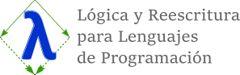
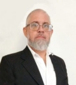
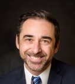
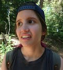

|
|

|
![[UNQ]](images/UNQ.png)
![[CONICET]](images/CONICET.png)
|
|
LoReL: Logic and Rewriting for Programming Languages, is a research team at UNQ and ICC (UBA/CONICET). The topics of interest include: Rewriting and Lambda Calculus, Type Theory, and Logical Methods with a focus on their application to Programming Languages, both, for classical and quantum computing.
|
Latest publications
-
A. Martín, A. Ríos, and A. Viso.
Pure Pattern Calculus a la de Bruijn
In Logical and Semantic Frameworks, with Applications (LSFA). To appear in ENTCS, 2020.
-
A. Díaz-Caro and O. Malherbe.
A Categorical Construction for the Computational Definition of Vector Spaces
Applied Categorical Structures 28(5):807-844, 2020.
-
A. Bucciarelli, D. Kesner, A. Ríos, and A. Viso.
The Bang Calculus Revisited
In Proceedings of FLOPS 2020, volume 12073 of Lecture Notes in Computer Science, pages 13-32, 2020.
-
B. Accattoli and A. Díaz-Caro.
Functional Pearl: The Distributive λ-Calculus
In Proceedings of FLOPS 2020, volume 12073 of Lecture Notes in Computer Science, pages 33-49, 2020.
-
D. Kesner, E. Bonelli, and A. Viso.
Strong Bisimulation for Control Operators (invited talk)
In Proceedings of CSL 2020, volume 152 of Leibniz International Proceedings in Informatics (LIPIcs), article 4, 2020.
-
F. Olmedo and A. Díaz-Caro.
Runtime Analysis of Quantum Programs: A Formal Approach
Extended abstract at PLanQC. 2020.
-
A. Díaz-Caro, G. Dowek, and J. P. Rinaldi.
Two linearities for quantum computing in the lambda calculus
Postproceedings of TPNC'2017 at BioSystems 186:104012, 2019.
-
M. Ayala-Rincón, E. Bonelli, J. Edi, and A. Viso.
Typed path polymorphism
Theoretical Computer Science 781:111-130, 2019.
-
A. Díaz-Caro and O. Malherbe.
A categorical construction for the computational definition of vector spaces (extended abstract)
Extended abstract at ACT 2019. 2019.
-
A. Díaz-Caro and G. Dowek.
Proof Normalisation in a Logic Identifying Isomorphic Propositions
In H. Geuvers, editor, Proceedings of FSCD 2019, volume 131 of Leibniz International Proceedings in Informatics (LIPIcs), article 14, 2019.
-
A. Díaz-Caro, M. Guillermo, A. Miquel, and B. Valiron.
Realizability in the Unitary Sphere
In Proceedings of LICS 2019, 2019.
-
P. Barenbaum and G. Ciruelos.
Factoring Derivation Spaces via Intersection Types
In S. Ryu, editor, Proceedings of APLAS 2018, volume 11275 of Lecture Notes in Computer Science, pages 22-44, 2018.
-
A. Díaz-Caro and M. Villagra.
Classically time-controlled quantum automata
In C. Martín-Vide, M. O'Neill, and M.A. Vega-Rodríguez, editors, Proceedings of TPNC 2018, volume 11324 of Lecture Notes in Computer Science, pages 266-278, 2018.
-
A. Díaz-Caro and O. Malherbe.
A concrete categorical semantics for Lambda-S
In Proceedings of LSFA 2018, volume 344 of Electronic Notes in Theoretical Computer Science, pages 83-100, 2019.
-
P. Barenbaum, E. Bonelli, and K. Mohamed.
Pattern Matching and Fixed Points: Resource Types and Strong Call-By-Need.
In D. Sabel, editor, Proceedings of PPDP 2018, ACM, Article 6, 2018.
-
D. Kesner, A. Ríos, and A. Viso.
Call-by-need, neededness and all that.
In C. Baier and U. Dal Lago, editors, Proceedings of FoSSaCS 2018, volume 10803 of Lecture Notes in Computer Science, pages 241-257, 2018.
-
J. Edi, A. Viso, and E. Bonelli.
Efficient type checking for path polymorphism.
In T. Uustalu, editor, Postproceedings of TYPES 2015, volume 69 of Leibniz International Proceedings in Informatics (LIPIcs), pages 6:1-6:23, 2018.
-
A. Díaz-Caro and G. Dowek.
Typing quantum superpositions and measurement.
In C. Martín-Vide, R. Neruda, and M. A. Vega-Rodríguez, editors, Proceedings of TPNC 2017, volume 10687 of Lecture Notes in Computer Science, pages 281-293, 2017.
-
A. Díaz-Caro.
A lambda calculus for density matrices with classical and probabilistic controls.
In B.-Y. E. Chang, editor, Proceedings of APLAS 2017, volume 10695 of Lecture Notes in Computer Science, pages 448-467, 2017.
-
A. Díaz-Caro and G. Martínez.
Confluence in probabilistic rewriting.
In S. Alves and R. Wassermann, editors, Preproceedings of LSFA 2017, volume 338 of Electronic Notes in Theoretical Computer Science, pages 115-131, 2018.
-
P. Arrighi, A. Díaz-Caro, and B. Valiron.
The vectorial lambda-calculus.
Information and Computation, 254(1):105-139, 2017.
-
E. Bonelli, D. Kesner, C. Lombardi, and A. Ríos.
On abstract normalisation beyond neededness.
Theoretical Computer Science, 672:36-63, 2017.
-
M. Coppo, M. Dezani-Ciancaglini, A. Díaz-Caro, I. Margaria, and M. Zacchi.
Retractions in intersection types.
In N. Kobayashi, editor, Proceedings of ITRS 2016, volume 242 of Electronic Proceedings in Theoretical Computer Science, pages 31-47, 2017.
-
A. Viso, E. Bonelli, and M. Ayala-Rincón.
Type soundness for path polymorphism.
In M. Benevides and R. Thiemann, editors, Proceedings LSFA 2015, volume 323 of Electronic Notes in Theoretical Computer Science, pages 235-251, 2016.
-
A. Díaz-Caro and A. Yakaryılmaz.
Affine computation and affine automaton.
In A. Kulikov and G. Woeginger, editors, Proceedings of CSR 2016, volume 9691 of Lecture Notes in Computer Science, pages 146-160, 2016.
-
A. Díaz-Caro and P. E. Martínez López.
Isomorphisms considered as equalities: Projecting functions and enhancing partial application through an implementation of λ+.
In R. Lammel, editor, Proceedings of IFL 2015, ACM, pages 9:1-9:11, 2015.
-
F. Bavera and E. Bonelli.
Justification logic and audited computation.
Journal of Logic and Computation, exv037, 2015.
-
B. Accattoli, P. Barenbaum, and D. Mazza.
A strong distillery.
In X. Feng and S. Park, editors, Proceedings of APLAS 2015, volume 9458 of Lecture Notes in Computer Science, pages 231-250, 2015.
-
A. Assaf, A. Díaz-Caro, S. Perdrix, C. Tasson, and B. Valiron.
Call-by-value, call-by-name and the vectorial behaviour of the algebraic λ-calculus.
Logical Methods in Computer Science, 10(4:8), 2014.
-
B. Accattoli, P. Barenbaum, and D. Mazza.
Distilling abstract machines.
In M. W. Bailey, R. Balasubramonian, A. Davis, and S. Adve, editors, Proceedings of ICFP 2014, volume 49(9) of ACM SIGPLAN Notices, pages 363-376, 2014.
-
C. Lombardi, A. Ríos, and R. de Vrijer.
Proof terms for infinitary rewriting.
In G. Dowek, editor, Proceedings of RTA 2014, volume 8560 of Lecture Notes in Computer Science, pages 303-318, 2014.
-
E. Bonelli and G. Steren.
Hypothetical logic of proofs.
Logica Universalis, 8(1):103-140, 2014.
-
B. Accattoli, E. Bonelli, D. Kesner, and C. Lombardi.
A nonstandard standardization theorem.
In M. W. Bailey, editor, Proceedings of POPL 2014, volume 49(1) of ACM SIGPLAN Notices, pages 659-670, 2014.
-
G. Steren and E. Bonelli.
Intuitionistic hypothetical logic of proofs.
In V. de Paiva, M. Benevides, V. Nigam, and E. Pimentel, editors, Proceedings of IMLA 2013, volume 300 of Electronic Notes in Theoretical Computer Science, pages 89-103, 2014.
-
E. Bonelli, D. Kesner, C. Lombardi, and A. Rios.
Normalisation for dynamic pattern calculi.
In A. Tiwari, editor, Proceedings of RTA 2012, volume 15 of Leibniz International Proceedings in Informatics (LIPIcs), pages 117-132, 2012.
-
E. Bonelli and F. Feller.
Justification logic as a foundation for certifying mobile computation.
Annals of Pure and Applied Logic, 163(7):935-950, 2012.
-
D. Kesner, C. Lombardi, and A. Ríos.
A standardisation proof for algebraic pattern calculi.
In E. Bonelli, editor, Proceedings HOR 2010, volume 49 of Electronic Proceedings in Theoretical Computer Science, pages 58-72, 2011.
-
A. Mendelzon, A. Ríos, and B. Ziliani.
Swapping: a natural bridge between named and indexed explicit substitution calculi.
In E. Bonelli, editor, Proceedings HOR 2010, volume 49 of Electronic Proceedings in Theoretical Computer Science, pages 1-15, 2011.
-
A. Arbiser, A. Miquel, and A. Ríos.
The λ-calculus with constructors: Syntax, confluence and separation.
Journal of Functional Programming, 19(5):581-631, 2009.
|
Permanent researchers
|
Associated member
|
Alejandro
Díaz-Caro
![[Diaz-Caro]](images/AlejandroDiazCaro.png)
(Team leader)
|
Pablo E. "Fidel"
Martínez López

|
Alejandro
Ríos
|
Andrés
Viso
![[Viso]](images/AndresViso.jpg)
|
Eduardo
Bonelli

|
| | |
PhD Students
|
Pablo
Barenbaum
|
Malena
Ivnisky

|
Rafael
Romero
|
Cristian F.
Sottile
|
|
Undergraduate Students
|
Teodoro
Freund
![[Freund]](images/TeodoroFreund.jpg)
|
Ignacio
Grima
![[Grima]](images/IgnacioGrima.jpg)
|
Federico
Lochbaum
![[Lochbaum]](images/FedericoLochbaum.jpg)
|
Alexis
Martín
![[Martin]](images/NoFotoM.png)
|
Mariana
Milicich
|
Nicolás
Monzón
|
|
Former PhD Students
|
Carlos
Lombardi
![[Lombardi]](images/CarlosLombardi.jpg)
|
Gabriela
Steren
![[Steren]](images/GabrielaSteren.jpg)
|
|
Former Undergrad Students
|
Francisco
Noriega
![[Noriega]](images/FranciscoNoriega.jpg)
|
Agustín
Borgna
![[Borgna]](images/AgustinBorgna.jpg)
|
Gonzalo
Ciruelos
![[Ciruelos]](images/GonzaloCiruelos.jpg)
|
Juan Pablo
Rinaldi
![[Rinaldi]](images/JuanPabloRinaldi.jpg)
|
Juan
Edi
![[Edi]](images/JuanEdi.jpg)
|
|
Collaborators
- Beniamino Accattoli (Inria Parcifal, France)
- Pablo Arrighi (Aix-Marseille Université, France)
- Mauricio Ayala Rincón (Universidade de Brasília, Brazil)
- Gilles Dowek (Inria & LSV, ENS-Cachan, France)
- Delia Kesner (Université Paris-Diderot, France)
- Octavio Malherbe (Universidad de la República, Uruguay)
- Pablo E. Martínez López (Universidad Nacional de Quilmes, Argentina)
- Simon Perdrix (LORIA, France)
- Benoît Valiron (CentraleSupélec & Université Paris-Sud, France)
- Marcos Villagra (Universidad Nacional de Asunción, Paraguay)
- Roel de Vrijer (Vrije Universiteit, The Netherlands)
|
|
|
Seminars take place on Thursdays at 2pm (Buenos Aires local time). Here is a Google calendar with the links to the talks. .
|
Upcomming seminar talks
-
October 1st, 2020 Simon Perdrix (CNRS / LORIA, France):
TBA.
(hide)
Title and abstract to be announced
-
September 24, 2020 Delia Kesner (Université de Paris, CNRS, IRIF et Institut Universitaire de France):
Reasoning about languages with control operators.
(hide)
One of the most surprising examples of the proofs-as-programs paradigm is the correspondence between the Peirce Law in classical logic and the call-cc control operator in functional programming, first noticed by Griffin in 1990, and then extended by Parigot in 1992, which has introduced the lambda-mu calculus as an isomorphic term language of classical natural deduction logic.
This talk provides some tools to reason about dynamic properties of the lambda-mu calculus.
In the first part of the talk, we discuss how to identify programs with control operators having exactly the same reduction semantics. This is achieved by introducing a relation which is a strong bisimulation defined over a revised presentation of Parigot's lambda-mu calculus. We show that our relation is conservative with respect to Laurent's original sigma-equivalence for lambda-mu terms (which is not a strong bisimulation), still being able to characterize structural equivalence in Polarized Proof-Nets.
In the second part of the talk, we show how to exactly measure time and space in the lambda-mu calculus. Our approach is based on typing systems equipped with non-idempotent intersection and union types, which are able to provide information about the number of evaluation steps to normal form and the size of the corresponding normal forms. These quantitative informations are measured separately, simply because the size of the result can be exponentially bigger than the number of steps. We develop our study for three well-known evaluation strategies: head, leftmost and maximal evaluation, pertaining to head, weak and strong normalization, respectively.
-
September 17, 2020 Raúl Fervari (Universidad Nacional de Córdoba, Argentina):
Separation logics: a modal perspective.
(hide)
Modal separation logics (MSL) are formalisms that have been recently proposed combining modal operators with separating connectives, both interpreted over one-dimensional Kripke models. In this way, MSL can be seen either as separation logics enriched with local operations to reason about memory states of a piece of software, or either as modal logics with global relation-changing operators (à la sabotage logic).
In this talk we will present MSL and some of its most interesting fragments, and discuss some results about complexity, axiom systems and expressivity. We will conclude by discussing some ongoing and future lines of research.
Some references:
- S. Demri and R. Fervari. On the Complexity of Modal Separation Logics. In Proceedings of Advances in Modal Logics AiML’18, pages 179-198. College Publications, 2018.
- S. Demri, R. Fervari and A. Mansutti. Axiomatising Logics with Separating Conjunction and Modalities. In Proc. of the 16th European Conference on Logics in Artificial Intelligence (JELIA 2019).
- S. Demri and R. Fervari. The Power of Modal Separation Logics.Journal of Logic and Computation (JLC), volume 29, pages 1139–1184, 2019.
- B. Bednarczyk, S. Demri, R. Fervari, and A. Mansutti. Modal Logics with Composition on Finite Forests: Expressivity and Complexity. In Proc. of the 35th Annual ACM/IEEE Symposium on Logic In Computer Science (LICS'20), 2020. IEEE Press, pages 167–180, 2020.
|
Past talks
-
September 10, 2020 Gilles Dowek (Inria & ENS Paris-Saclay, France):
Logipedia: towards a Wikipedia of formal proofs.
(hide)
Formal computerized proofs are now a central tool in computer science and in mathematics. But, each system – Coq, HOL Light, Isabelle/HOL,PVS... – implements its own language and its own theory, limiting the interoperability between systems and the sustainability of these proofs. Logipedia is an, in progress, encyclopedia of formal proofs, expressed in various theories. It is based on the idea to express these theories in a new logical framework allowing bound variables, explicit proof-terms, computation rules, and peaceful co-existence of constructive and non constructive proofs.
-
September 3, 2020 Hernán Melgratti (Universidad de Buenos Aires / CONICET, Argentina):
Probabilistic Analysis of Binary Sessions.
(hide)
We study a probabilistic variant of binary session types that relate to a class of Finite-State Markov Chains. The probability annotations in session types enable the reasoning on the probability that a session terminates successfully, for some user-definable notion of successful termination. We develop a type system for a simple session calculus featuring probabilistic choices and show that the success probability of well-typed processes agrees with that of the sessions they use. To this aim, the type system needs to track the propagation of probabilistic choices across different sessions.
Joint work with: Omar Inverso, Hernán Melgratti, Luca Padovani, Catia Trubiani, Emilio Tuosto
-
August 20, 2020 Margherita Zorzi (Università di Verona, Italy):
A Host-Core type theory as internal language.
(hide)
JOINT WORK WITH Davide Trotta Nad Roberto Giacobazzi (University of Verona).
Programming platforms and modern IDE systems provide efficient methods to manage
and control the process of software development in an heterogeneous programming
language. In this context the programmer uses a main language, the host, and
delegates some tasks to another one, typically domain specific, called it the
core, hierarchically embedded into the former. In this paper we provide a formal
characterization of host-core languages in terms of the internal language of a
category. We propose HC0, a type theory able to capture the common properties of
an ideal class of (functional) host-core languages. The type theory must to be
“mixed”, because it has to describe both host and core syntaxes and the
communication between the two parts. It is also compositional, i.e. it can be
easily extended without changing its structure. We provide a denotational
semantics in terms of enriched categories, and we prove a strong relationship
between syntax and semantics via the internal language a notion, at the best of
our knowledge, completely new in programming theory. By proving that HC0 is the
internal language of the category of its models we can equivalently reason both
from a syntactical and a semantical point of view. The internal language allows
us to provide a formal definition of host-core language and to characterize the
semantics of the class languages that follows in our definition. Moreover, we
also obtain some interesting byproducts. We are able to provide a first
comparison between the host-core model and the standalone one (i.e. the
programming paradigm based on a single language). Finally, we define a function
that, given a model (in the sense we defined for HC0) extracts a host-core type
theory.
-
August 13, 2020 Mauricio Ayala Rincón (Universidade de Brasília, Brazil):
Termination of Functional Programs and Term Rewriting Systems.
(hide)
This talk will present current research on the formalization
of termination for a functional language model called PVS0.
This model contributes to the meta-theoretical study of the
PVS higher-order logic and their computational aspects.
Automation of the verification of termination increases the
semantic capabilities of deductive systems and compilers and
involves research challenges that range from proving
fundamental theorems about the pertinence of the
computational model to the integration of mechanical proofs
of the correspondence of different termination criteria for
computational frameworks such as PVS0 and term rewriting
systems.
-
August 6, 2020 Bruno Lopes (Universidade Federal Fluminense, Brazil):
A logical framework to reason about Reo circuits.
(hide)
Reo is a graphical-based coordination modelling language which aims to capture and model the interaction between pieces of software, using structures known as channels.
The fact that Reo can be used to model many real-world situations has attracted attention from researchers, resulting in a great effort directed in formalising means to verify properties of Reo circuits. This work presents a logical framework to model and reason about Reo circuits in a proof-theoretical way (using Coq proof-assistant), and by means of model checking (using nuXmv model checker).
-
July 23, 2020 Mallku Sodevilla (Universidad Nacional de Córdoba, Argentina):
Semántica operacional y su aplicación para el estudio de recolección de basura, en Lua 5.2.
(hide)
Lua es un lenguaje de programación imperativo de scripting, que ofrece tipado dinámico, manejo automático de memoria, facilidades para la descripción de datos, y mecanismos de meta-programación para adaptar el lenguaje a dominios específicos. Es utilizado en proyectos de diversa naturaleza, desde desarrollo de juegos, de manera notable en juegos "AAA", desarrollo de plugins, firewall de aplicaciones web, y en sistemas embebidos. Gracias al éxito de Lua es posible encontrar diversas implementaciones alternativas y analizadores estáticos. Sin embargo, la naturaleza informal de la especificación del lenguaje implica que quienes desarrollan esas herramientas no pueden proveer garantías formales de corrección para las mismas.
En este trabajo presentamos una formalización de la semántica operacional de Lua 5.2, incluyendo recolección de basura (GC) y sus interfaces (finalizadores y tablas débiles; una forma de implementar referencias débiles). Validamos la semántica mediante su mecanización, utilizando PLT Redex, y el testeo de la misma con respecto a la suite de tests del intérprete oficial de Lua. A su vez, utilizamos las facilidades ofrecidas por PLT Redex para la mecanización de sistemas formales y testeo aleatorio de propiedades, para obtener evidencia de la propiedad de progreso de la semántica. Para GC proveemos un framework para razonar formalmente sobre propiedades de cualquier algoritmo de GC basado en un criterio sintáctico. Dentro del framework podemos formalizar y esbozar la demostración de propiedades sobre GC, incluyendo su corrección (sin considerar sus interfaces).
-
July 16, 2020 Miguel Pagano (Universidad Nacional de Córdoba, Argentina):
Realizabilidad para Adecuación de la máquina de Sestoft.
(hide)
Desde hace unos 10 años que se usa biortogonalidad (una forma de definir relaciones lógicas) para probar la corrección de compiladores para lenguajes funcionales. En esta charla contaré el trabajo que venimos realizando en Córdoba hacia una adaptación de esa técnica para un lenguaje lazy. Es un trabajo conjunto que empezó Leo Rodríguez con Daniel Fridlender, luego nos sumamos con Ale Gadea.
-
July 2, 2020 Benoît Valiron (LRI / CentraleSupélec, France):
Towards a Curry-Howard Isomorphism for quantum control.
(hide)
In this talk, I will present a linear and reversible language with inductive and coinductive types, together with a Curry-Howard correspondence with the logic muMALL : linear logic extended with least and greatest fixed points which allow inductive and coinductive statements. We shall discuss the language, the correspondance with logic, and the possible extensions to quantum control of the approach.
-
June 25, 2020 Daniele Nantes (Universidade de Brasília, Brazil):
An Investigation of Linear Substitution Lambda-Calculus as Session-Typed Processes.
(hide)
Sandra Alves, Daniele Nantes, J. A. Pérez and Daniel Ventur
Abstract. This work in progress investigates a type directed encoding of the simply-typed linear substitution lambda-calculus to session-typed pi-processes, taking into account an operational semantics defined by a linear weak head reduction strategy. The encoding adapts the one by Toninho et. al., which encodes the simply-typed lambda-calculus into a session-typed pi-calculus through linear logic, while extending it to explicit substitutions, considering a generalisation of the pi-calculus operational semantics with reduction rules at a distance, as proposed by Accattoli. These changes, while weakening the simulation of lambda-calculus in the pi-calculus, when compared with the 1-to-1 simulation obtained by Accattoli, allow for an as tight as possible encoding of well-typed functions as session-typed processes.
- June 18, 2020 Eduardo Bonelli (Stevens Institute of Technology, United States):
Logic of Proofs y Lambda Cálculo: proofs terms y unificación de alto-orden
.
(hide)
Logic of Proofs (LP) [Art94] es la primera de una familia de lógicas modales hoy conocidas como Justification Logics. LP incluye proposiciones de la forma [s]A donde "s" denota la razón or justificación de la veracidad de A. Si uno se "olvida" la razón "s" en la proposición [s]A, queda el operador modal []A de la lógica modal S4.
En esta charla vamos a explorar dos lazos entre LP y lambda cálculo:
- El primero se podría resumir como:
[s]A es el tipo de los computaciones o proof terms con source s
Un proof term es una expresión que denota una computación o derivación desde un término source a un término target (Ej. capítulo 8 del TERESE para TRS).
- El segundo de podría resumir como:
La decoración de pruebas de S4 para obtener pruebas de LP se reduce a un problema de unificación de alto-orden.
-
June 4, 2020 Pablo Barenbaum (Universidad de Buenos Aires, Argentina):
Un cálculo-lambda relacional.
(hide)
La programación relacional se caracteriza por el hecho de que las expresiones representan relaciones que no tienen por qué ser funcionales, y por el papel fundamental que desempeña la unificación en el modelo de cómputo. Uno de sus exponentes más puros es el lenguaje de programación miniKanren. En esta charla presentaremos una variante del cálculo-lambda extendido con construcciones propias de la programación relacional: alternativa no deterministica, secuenciación explícita y unificación. Discutiremos diversos aspectos de este cálculo actualmente en desarollo: semántica operacional, denotacional e implementación de un lenguaje de programación basado en estos principios.
- September 10, 2019. Pierre Vial will give us an overview on his work with a talk entitled An introduction to idempotent or not intersection types
- July 8, 2015. Abuzer Yakaryilmaz will give us some insight on his research line with his talk entitled Classical and Quantum Automata on Promise Problems
- April 22, 2015. Andrés Viso gives us an overview on his joint work with Eduardo Bonelli and Mauricio Ayala-Rincon entitled Static Typing for Path Polymorphism
- February 18, 2015. Bernard Serpette will give us some insight on his recent work entitled Computing with collaborative side effects
- November 26, 2014. Nicolás Passerini and Pablo Tesone will introduce us to this recent work on An Extensible Constraint-based Type Inference Algorithm for Object-Oriented Dynamic Languages Supporting Blocks and Generic Types
- November 12, 2014. Jose Santos will tell us about his work on information flow analysis entitled Enforcing Secure Information Flow in Client-side Web Applications.
- October 29, 2014. Carlos Lombardi will give us some insight on his PhD thesis entitled Reduction Space for Non-Sequential and Infinitary Rewriting Systems.
- October 1 & 15, 2014. Alejandro Díaz-Caro will tell us about his joint work with Gilles Dowek on Type Theory Modulo Isomorphism
- September 3 & 17, 2014. Andrés Viso will introduce us to some of the details on proving Strong Normalization for CPP, a type system for a pattern calculus supporting Path Polymorphism. Joint work with Eduardo Bonelli and Mauricio Ayala-Rincón.
- August 20, 2014. Thibaut Balabonski will be opening this new semester's seminar at UNQ with his talk on Semantic Proofs of Correctness For Low-level Concurrent Program Optimisations
- June 13, 2014. Eduardo Bonelli will present us some recent work by Beniamino Accattoli and Ugo Dal Lago entitled Beta Reduction is Invariant, Indeed.
- May 29, 2014. Pablo Barenbaum give us some insight on his recent joint work with Eduardo Bonelli on Optimal Reduction in the Linear Substitution Calculus.
- May 13, 2014. Antonio Bucciarelli joins us for a lecture on Definability and Full Abstraction Problems for Lambda Calculi.
- March 27, 2014. Andrés Viso gives us an overview on his joint work with Eduardo Bonelli and Mauricio Ayala-Rincon entitled Typing a Calculus of Patterns Supporting Path Polymorphism.
- August 23, 2013. Ioana Cristescu presents her joint work with Jean Krivine and Daniele Varacca entitled A Compositional Semantics For The Reversible Pi-calculus.
- July 25, 2013. Jean-Jacques Lévy revisits his recent talk Understanding Strong Normalisation on his visit to Buenos Aires.
- June 27, 2013. Beta Ziliani visits Buenos Aires and tells us about his recent work on extending Coq with Mtac: a Monad for Typed Tactic Programming.
- June 6, 2013. Andrés Viso gives us a brief introduction on Typing Systems for different Pattern Calculi. The talk is based on Barry Jay's book Pattern Calculus: Computing with Functions and Structures.
- May 16, 2013. Delia Kesner gives us an overview on her joint work with Antonio Bucciarelli and Simona Ronchi della Rocca entitled Observability Through Product Types.
- May 9, 2013. Carlos Lombardi introduces us to the theory of Proof Terms as a continuation of his previous talk on equivalences between reductions for Infinitary Rewriting Systems. Further information is available on Term Rewriting Systems (TeReSe) chapter 8.
- April 25, 2013. Gabriela Steren gives us an overview on her work Intuitionistic Hypothetical Logic of Proofs presented on The 6th Workshop on Intuitionistic Modal Logic and Applications (IMLA 2013) last April 7.
- April 11, 2013. Carlos Lombardi introduces us to Infinitary Rewriting Systems and shows some interesting equivalences between reductions. Background information can be found on Term Rewriting Systems (TeReSe) chapter 12 and Infinitary Normalization by Jan Willem Klop and Roel De Vrijer.
|
Recent and upcomming events
- September 4, 2020. Cristian Sottile gives a talk at IFL 2020 (joint work with Alejandro Díaz-Caro and Pablo E. Martínez López).
- September 1st, 2020. Alejandro Díaz-Caro gives a talk at the seminar of the QuICC Team.
- August 28, 2020. Malena Ivnisky defends her Licenciatura thesis (eq. Masters in the EU) at Universidad de Buenos Aires, supervised by Alejandro Díaz-Caro and Hernán Melgratti.
- August 17, 2020. Cristian Sottile gives a talk at the Scottish Programming Languages and Verification Summer School 2020.
- July 23, 2020. Alejandro Díaz-Caro gives a talk at "Lógicos em Quarentena" seminar of the Brazilian Logic Society.
- July 22, 2020. Andrés Viso defends his PhD thesis at Universidad de Buenos Aires, which has been supervised by Eduardo Bonelli and Delia Kesner.
- May 18, 2020. Alejandro Díaz-Caro becomes the new director of LoReL, after many years of the direction of Eduardo Bonelli and Alejandro Ríos.
- May 12, 2020. Alejandro Díaz-Caro gives a talk at FICH-UNL invited by the students union.
- May 4, 2020. Francisco Noriega defends his Licenciatura thesis (eq. Masters in the EU) at Universidad de Buenos Aires, supervised by Alejandro Díaz-Caro.
- April 1, 2020 Rafael Romero and Cristian Sottile officially start their PhD fellowships.
- March 19, 2020. Rafael Romero defends his Licenciatura thesis (eq. Masters in the EU) at Universidad de Buenos Aires, supervised by Alejandro Díaz-Caro.
- March 10, 2020. Cristian Sottile defends his Licenciatura thesis (eq. Masters in the EU) at Universidad Nacional de La Plata, supervised by Alejandro Díaz-Caro and Pablo E. "Fidel" Martínez López.
- January 15, 2020. Cristian Sottile has been granted with a CONICET scholarship to do his PhD thesis at UBA within LoReL, under the direction of Alejandro Díaz-Caro and Pablo E. Martínez López, starting in April 2020.
- January 15, 2020. Lucas Rafael Romero has been granted with a CONICET scholarship to do his PhD thesis at UBA within LoReL, under the direction of Alejandro Díaz-Caro and Octavio Malherbe, starting in April 2020.
- October 11, 2019. Alejandro Díaz-Caro gives a seminar at BA-Logic.
- September 13, 2019. Pierre Vial gives a seminar at ICC.
- September 12, 2019. Alejandro Díaz-Caro gives a science popularization talk about quantum computing at Semana de la computación. Exactas-UBA.
- September 8 to 22, 2019. Alejandro Ríos visits Antinio Bucciarelli and Delia Kesner at IRIF, France.
- September 5 to October 5, 2019. Andrés Viso visits Antinio Bucciarelli and Delia Kesner at IRIF, France.
- September 2 to 6, 2019. Alejandro Díaz-Caro visits Octavio Malherbe at UdelaR, Uruguay.
- August 20, 2019. The eighth LoCIC meeting is taking place at FI-UBA.
- August 1st, 2019. Agustín Borgna defends his Licenciatura thesis (eq. Masters in the EU) at Universidad de Buenos Aires, supervised by Alejandro Díaz-Caro.
- July 2, 2019. ICC has been chosen to organize FSCD 2021. Alejandro Díaz-Caro will be the chair of the organisation committee.
- June 19, 2019. Alejandro Díaz-Caro visits Delia Kesner and Beniamino Accattoli at IRIF, France.
- June 17, 18, 20, and 21, 2019. Alejandro Díaz-Caro visits Gilles Dowek at LSV, France.
- June 11 to 14, 2019. Alejandro Díaz-Caro visits Benoît Valiron at LRI, France.
- May 22 to 24, 2019. The second FunLeP meeting is taking place at UNQ.
- May 14 to 17, 2019. Alejandro Díaz-Caro visits Alexandre Miquel and Benoît Valiron (who is visiting) at Universidad de la Repúbica, Montevideo, Uruguay.
- May 2nd, 2019. We have a day of LoReL team, with talks by all the Ph.D. and Masters students.
- April 9 to 14, 2019. Alejandro Díaz-Caro visits Octavio Malherne at Universidad de la Repúbica, Montevideo, Uruguay.
- March 15th, 2019. Alejandro Díaz-Caro and Pablo Barenbaum give talks at the ICC day, Buenos Aires, Argentina.
- March 13th, 2019. Alejandro Díaz-Caro gives a talk at the V International Workshop on Quantum Mechanics and Quantum Information: Physical, Philosophical and Logical Perspectives at Universidad CAECE, Buenos Aires, Argentina.
- February 18 to 22, 2019. Alejandro Díaz-Caro gives a talk and a mini-course at the XI Summer Workshop in Mathematics at Universidade de Brasília, Brazil.
- January 16 to 27, 2019. Alejandro Díaz-Caro visits Federico Olmedo at Universidad de Chile, Santiago, Chile.
- December 3 to 20, 2018. Alejandro Díaz-Caro visits Gilles Dowek at ENS Paris-Cachan and Benoît Valiron at Université Paris-Sud, France.
- November 22, 2018. Alejandro Díaz-Caro gives a talk at the VIII Conference on Quantum Foundations: Quantum Logic & Quantum Structures, held at CAECE, Buenos Aires, Argentina.
- November 17 to December 16, 2018. Andrés Viso visits Delia Kesner and Antonio Bucciarelli at IRIF, Université Paris Diderot, France.
- November 17 to 30, 2018. Alejandro Ríos visits Delia Kesner and Antonio Bucciarelli at IRIF, Université Paris Diderot, France
- November 15, 2018. Malena Ivnisky gives a talk at a Master's seminar event at LRI about her master's thesis, France.
- November 12 to 24, 2018. Malena Ivnisky visits Benoît Valiron at Université Paris-Sud, France.
- October 27 to 30, 2018. Alejandro Díaz-Caro visits Octavio Malherbe at Universidad de la República, Uruguay.
- September 6, 2018. 6ta Jornada de Lógica, Computación e Información Cuántica takes place at ICC (Exactas-UBA).
- August 17, 2018. 1er Encuentro de Fundamentos de Lenguajes de Programación (FunLeP) takes place at CIFASIS (Rosario). LoReL members are part of FunLeP organisation.
- July 2-16, 2018. Alejandro Díaz-Caro visits Marcos Villagra at NIDTEC, Universidad Nacional de Asunción, Paraguay.
- June 28, 2018. Gonzalo Ciruelos defends his licenciatura thesis (eq. masters in the eu) at universidad de buenos aires, supervised by Pablo Barenbaum.
- June 27, 2018. Juan Pablo Rinaldi defends his Licenciatura thesis (eq. Masters in the EU) at Universidad Nacional de Rosario, supervised by Alejandro Díaz-Caro.
- May 21, 2018. The Logic and Foundations of Programming Languages Day takes place at Exactas-UBA.
- April 5, 2018. Agustín Borgna gives a seminar at Deducteam at LSV, ENS Paris-Saclay, Cachan, France.
- April 2 to 6, 2018. Alejandro Díaz-Caro visits Deducteam at LSV, ENS Paris-Saclay, Cachan, France.
- March 26 to 30, 2018. Alejandro Díaz-Caro visits ModHel at LRI Université Paris-Saclay, Orsay, France.
- March 19 to 22, 2018. Alejandro Díaz-Caro gives a seminar at CVQT in Edinburgh, UK.
- March 9, 2018. Alejandro Díaz-Caro gives a seminar at WTPC in UNQ.
- March 1, 2018. 4ta Jornada de Lógica, Computación e Información Cuántica takes place at UNQ.
- December, 2017. Alejandro Díaz-Caro visits LSV at ENS-Cachan, Paris.
- November, 2017. Andrés Viso visits IRIF at Université Paris Diderot, Paris.
- October 25-27, 2017. Alejandro Díaz-Caro gives a seminar at the XV JCC in Rosario.
- October 19, 2017. LIA INFINIS workshop takes place at UBA.
- August, 2017. Pablo Barenbaum visits Stevens Institute of Technology in Hoboken, NJ.
- July 24-29, 2017. Alejandro Díaz-Caro gives a course at the ECI 2017 in Buenos Aires.
- April 25, 2017. Alejandro Díaz-Caro gives a seminar in the IFLP, La Plata.
- April 20-21, 2017. Alejandro Díaz-Caro visits at Facultad de Ingeniería (UdelaR), Montevideo.
- April 3-12, 2017. Alejandro Díaz-Caro visits at ENS-Cachan, Paris.
- March 23, 2017. Jornada de lógica, computación e información cuántica takes place at UNQ.
- December 5-6, 2016. FoQCoSS Kickoff Workshop takes place at UNQ.
- October 2016. Alejandro Díaz-Caro gives a course at CACIC 2016 in San Luis.
- Jan/Dec 2016. Eduardo Bonelli stays at the Stevens Institute of Technology as an invited professor.
- May 2016: Alejandro Díaz-Caro visits ENS-Cachan, Paris.
- Jan/Jul 2016. Alejandro Díaz-Caro stays at Università di Torino as an invited professor.
- December 17, 2015. Juan Edi defends his Licenciatura thesis (eq. Masters in the EU) at Universidad de Buenos Aires, supervised by Andrés Viso and Eduardo Bonelli.
- October 2015. Pablo Barenbaum visits PPS Laboratoire in Paris.
- July 17. LIA INFINIS workshop takes place at UBA.
- July 2015. Thibaut Balabonski visits Buenos Aires.
- July 2015. Abuzer Yakaryilmaz visits UBA for a course at the ECI 2015 Winter School, and gives a seminar at UNQ.
- May/Jun 2015. Andrés Viso visits PPS Laboratoire in Paris.
- Feb/Mar 2015. Bernard Serpette visits Buenos Aires.
- Feb/May 2015. Pablo Barenbaum visits PPS Laboratoire in Paris.
- February 2015. Alejandro Díaz-Caro gives the course at RIO 2015 in Río Cuarto.
- December 15, 2014. Gabriela Steren presents her PhD thesis at UBA.
- November 7, 2014. Carlos Lombardi presents his PhD thesis at UBA.
- November 5-6, 2014. Delia Kesner visits Buenos Aires.
- November 2014. Jose Santos visits Buenos Aires.
- August, 2014. Thibaut Balabonski visits Buenos Aires.
- July 2014. Beta Ziliani gives a course on Coq at the ECI 2014 Winter School at UBA.
- November 2013. Mauricio Ayala-Rincón visits Buenos Aires.
- October 2013. Delia Kesner visits UBA.
- Sept/Oct 2013. Roel de Vrijer visits UBA.
- July 2013. Jean-Jacques Lévy gives a course on Reductions and casualty in the ECI 2013 Winter School at UBA.
- May 2013. Delia Kesner visits UBA.
- 11 April 2013. First meeting of LoReL seminar at UBA.
- February 2013. Pierre Lescanne visits UBA in February 2013.
- 9-11 Oct 2012. Beniamino Accattoli gives a short course on Linear Logic, Lambda-calculus, and Explicit Substitutions.
- 03 Oct 2012. Mini Workshop on Rewriting and Type Theory takes place at UBA.
- 01 Oct 2012. INFINIS Business meeting takes place at UBA.
- October 2012. Roel de Vrijer visits Buenos Aires.
- October 2012. Delia Kesner and Beniamino Accatolli visits Buenos Aires.
- August 2012. Mauricio Ayala-Rincón visits UNQ in the context of a STIC-AmSud cooperation project.
- 07 Sep 2012. Carlos Lombardi gives a talk at INFINIS Meeting.
- 03 Sep 2012. Eduardo Bonelli gives a talk at WoLLIC 2012, Sep 3-6, 2012.
- 29 May 2012. Delia Kesner presents a joint paper at RTA 2012.
- 22-23 May 2012. Eduardo Bonelli gives a 4 hour short course on Normalisation for Dynamic Pattern Calculi at Universidad de Brasilia.
|
Recent and upcomming visitors
- December 16-20, 2019 and February 18-22, 2020. Octavio Malherbe.
- November 26 to December 6, 2019. Gilles Dowek.
- November 13-22, 2019. Simon Perdrix.
- November 8-22, 2019. Delia Kesner.
- October 14-25, 2019. Ivan Marquez.
- September 9 to October 4, 2019. Pierre Vial.
- August 20 to September 30, 2019. Nely Plata-César.
- July 22-27, 2019. Pablo Arrighi and Beniamino Accattoli.
- July 1st to 12, 2019. Federico Olmedo.
- April 26-29, 2019. Octavio Malherbe.
- April 8-22, 2019. Delia Kesner and Antonio Bucciarelli
- March 11-14, 2019. Marcos Villagra.
- February 26 to March 1, 2019. Octavio Malherbe.
- September 20-23, 2018. Octavio Malherbe.
- September 6, 2018. Marcos Villagra and Alexandre Miquel.
- September 1-11, 2018. Delia Kesner.
- July 23 to August 3, 2018. Gilles Dowek.
- June 16-19, 2018. Octavio Malherbe.
- May 18-22, 2018. Alexandre Miquel and Mauricio Guillermo.
- May 14-27, 2018. Delia Kesner and Antonio Bucciarelli.
- May 14-25, 2018. Benoît Valiron.
- April 19-22, 2018. Octavio Malherbe.
- January 22-26, 2018. Octavio Malhebre.
- November 8-9, 2017. Marcos Villagra.
- October 12-15, 2017. Octavio Malherbe.
- September 13-22, 2017. Delia Kesner.
- July 10-21, 2017. Simon Perdrix.
- June 22-30, 2017. Gilles Dowek.
- May 4-14, 2017. Delia Kesner.
- March 23-26, 2017. Octavio Malherbe.
- December 2016. Gilles Dowek, Pablo Arrighi, Simon Martiel, Stefano Facchini, Benoît Valiron, Renaud Vilmart, Octavio Malherbe.
- April 2016. Delia Kesner.
- July 2015. Abuzer Yakaryilmaz and Thibaut Balabonski.
- Feb/Mar 2015. Bernard Serpette.
- November 5-6, 2014. Delia Kesner.
- November 2014. Jose Santos.
- September 2014. Delia Kesner.
- August 2014. Thibaut Balabonski.
- May 5-16, 2014. Delia Kesner and Antonio Bucciarelli.
- November 2013. Mauricio Ayala-Rincon.
- October 2013. Delia Kesner visited UBA.
- Sept/Oct 2013. Roel de Vrijer visited UBA.
- July 2013. Jean-Jacques Lévy visited UBA for a course in the ECI 2013.
- May 2013. Delia Kesner.
- February 2013. Pierre Lescanne. He also gave a course in the Río Cuarto summer school.
- October 2012. Roel de Vrijer.
- August 2012. Mauricio Ayala Rincón visited UNQ during the end of August 2012 for two weeks in the context of a STIC-AmSud cooperation project.
|
Current projects
- PUNQ 1342/19. Fundamentos de lenguajes de programación: sistemas de pruebas y computación cuántica. Universidad Nacional de Quilmes. 2019-2021.
- ECOS Sud A17C01. Semantics and implementation of functional programming. 2018-2020.
- ECOS Sud A17C03. Quantum calculi. 2018-2020.
- We participate in the LIA SINFIN, a French-Argentinean Laboratory (Laboratoire Internationale Associé) between Centre National de la Recherche Scientifique(CNRS) and Université Paris Diderot, on the one hand, and Consejo Nacional de Investigaciones Científicas y Técnicas (CONICET) and the Universidad de Buenos Aires, on the other. It is devoted to research in Computer Science. Specific focus is placed on formal methods, for modeling, verification and development of complex software artifacts. 2019-2024.
Past projects
- PICT 2015-1208. Fundamentos de lenguajes de programación cuántica: hacia una lógica computacional. MinCyT. 2017-2019.
- PUNQ 1370/17. Fundamentos de lenguajes de programación cuánticos y sus consecuencias en sistemas clásicos. Universidad Nacional de Quilmes. 2017-2019.
- We participated in INFINIS, a French-Argentinean Laboratory (Laboratoire Internationale Associé) between Centre National de la Recherche Scientifique(CNRS) and Université Paris Diderot, on the one hand, and Consejo Nacional de Investigaciones Científicas y Técnicas (CONICET) and the Universidad de Buenos Aires, on the other. It is devoted to research in Computer Science. Specific focus is placed on formal methods, for modeling, verification and development of complex software artifacts. 2013-2018.
- STIC-AmSud. FoQCoSS - Foundations of Quantum Computation: Syntax and Semantics. Argentina: Universidad Nacional de Quilmes, Universidad de Buenos Aires. Brazil: Universidade Federal de Santa Maria. France: INRIA, CNRS/LORIA, Université Aix-Marseille, CentraleSupélec/LRI. 2016-2017.
- PUNQ 1425/15. Fundamentos de lenguajes de programación cuánticos y sus consecuencias en sistemas clásicos. Universidad Nacional de Quilmes. 2015-2017.
- PUNQ 1416/15. Programación funcional: fundamentos revisados. Universidad Nacional de Quilmes. 2015-2016.
- ECOS Sud. Dinámica De Cálculos De Sustituciones Explícitas A Distancia.
- STIC-AmSud. Formal Development of Computer Programs and Applications. Argentina: Universidad Nacional de Quilmes. Brazil: Universidade de Brasília. France: Laboratoire PPS, Université Paris VII. 2012-2013.
- UBACyT 20020100100372 Diversas extensiones de sistemas de reescritura para la implementación eficiente de lenguajes de programación. Universidad de Buenos Aires. 2011-2014.
- PUNQ 1011/11. Técnicas rigurosas para el desarrollo de software confiable. Universidad Nacional de Quilmes. 2011-2012.
|
Alejandro Díaz-Caro
adiazcaro@icc.fcen.uba.ar
Alejandro Ríos
rios@dc.uba.ar
Instituto de Ciencias de la Computación
FCEN, Universidad de Buenos Aires
Pabellón 1, Ciudad Universitaria
C1428EGA Ciudad Autónoma de Buenos Aires
Argentina
|
Alejandro Díaz-Caro
alejandro.diaz-caro@unq.edu.ar
Pablo E. Martínez López
fidel@unq.edu.ar
Depto. de Ciencia y Tecnología
Universidad Nacional de Quilmes
Roque Sáenz Peña 352
B1876BXD Bernal
Provincia de Buenos Aires, Argentina
|
|
|
|
|
|
|
|
![[Valid HTML 4.01!]](images/w3c-html401.jpg)